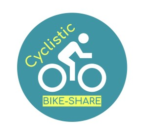

Predicted employee turnover and identified key factors influencing retention.
Utilized Python programming language for data analysis, visualization, built models using random forest, and decision tree algorithms.

Predicted generous tippers (≥ 20%) for New York City Taxi and Limousine Commission (TLC). Utilized python, data visualization techniques and built random forest, and XGBoost models. Identified key tipping behaviors which informed service quality and customer satisfaction.

Analysed bicycle trip data to differentiate casual riders from paid members and provide marketing insights. Utilized R programming language with tidyverse, lubridate, janitor, and ggplot2 packages for data cleaning, wrangling, analysis, and visualization.